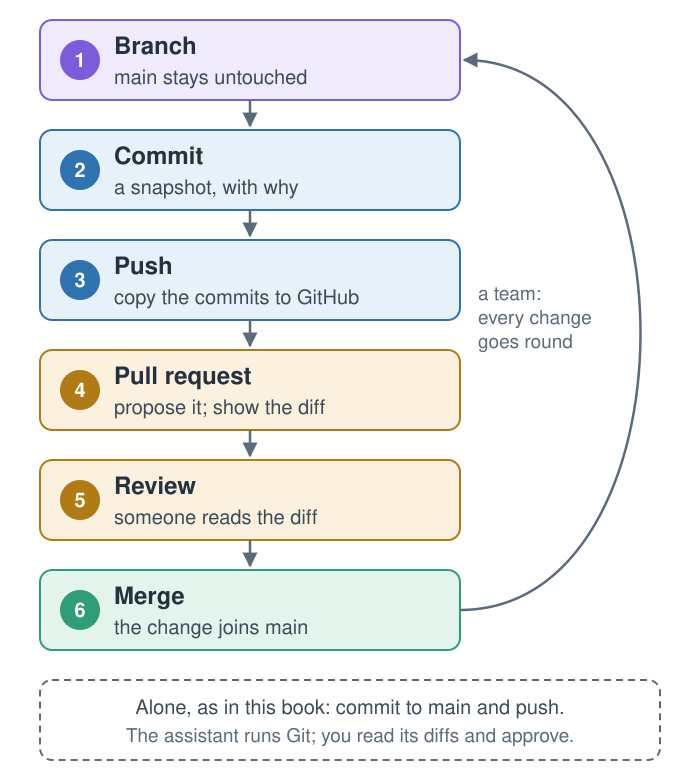
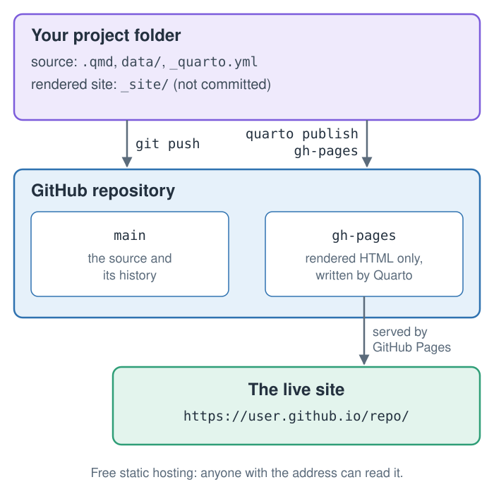

7 Publishing and Proving the Rebuild
Quarto, reproducible publishing, coding assistants, Markdown, Python, EPUB, data analysis, k-means clustering
The guide exists on your computer. This chapter puts it on the web, as a website anyone can open on a phone, and then asks the question the whole workflow is built to answer: if one input changes, which outputs change with it, and how do you know?
Publishing involves two new tools, Git for keeping every version of the source and GitHub Pages for serving the result, plus one decision about where the rendered site is built. The rebuild question has no prompt in this chapter. It is a test of whether you can predict what a rebuild will do, and then check.
7.1 Git: every change, safely
A repository is a project folder together with its full history. Git records that history as commits: snapshots of every tracked file, each with a message saying why it changed, so any earlier version can be restored or compared with another. Six ideas cover how teams use it (Figure 7.1; Pro Git and GitHub’s documentation, checked 2026-10-31):

A branch is a movable label on a line of commits, so work can happen on a branch while the main line, called main, keeps working. Push copies commits to the shared repository on GitHub. A pull request proposes merging a branch and shows the difference, or diff, line by line; a review comments on it, approves it or asks for changes; merging adds its commits to main.
Working alone, as in this book, you commit straight to main and push. In a team, every change goes round the loop; the repository behind this book is built that way. Either way, the assistant runs the Git commands and you approve them. Ask it to “commit with a message that says why”, and read its diffs before you approve: the diff is the clearest view you will get of what the assistant actually did.
7.2 Where a site lives
A rendered Quarto website is static: a folder of HTML, CSS, JavaScript, images and documents, with no program running on a server. Any web server can serve it, so publishing means copying that folder to a host. GitHub Pages is the host this book uses, because the repository is already on GitHub and quarto publish gh-pages is built in (Figure 7.2).

main branch with Git; quarto publish gh-pages renders the site on your computer and pushes only the rendered HTML to a separate branch, which GitHub serves.
There are two ways to get a site onto a host, and the difference matters. In the first, you render on your own computer and upload the result: quarto publish does this for GitHub Pages and Netlify. In the second, the host builds the site from your repository on every push. That only works if the build installs Quarto, Python and every package the project needs, or if the rendered output is committed. Since the London repository leaves its rendered _site/ folder out, connecting it to a host that builds would produce nothing until the build is set up.
Free static hosts, checked on their official pages on 2026-11-07. Free plans change: read the current limits before choosing.
| Host | How the site gets there | Note on the free plan |
|---|---|---|
| GitHub Pages | you upload: quarto publish gh-pages |
the route in this book |
| Netlify | you upload: quarto publish netlify |
300 credits a month, 15 per production deploy; Quarto’s Netlify build plugin runs no Python, so render locally |
| Cloudflare | you upload _site/ with wrangler deploy |
Pages allows 500 builds a month and 20,000 files |
| Vercel | the host builds from Git | Hobby plan: personal, non-commercial use only |
| GitLab Pages | the host builds, in a CI job | publishes a public folder: set output-dir: public, and install Quarto and Python in the job |
| Render | the host builds from Git | rebuilds on every push to the connected branch |
Quarto Pub, Quarto’s own free host, is being replaced by Posit Connect Cloud.
7.3 One folder, one website
Make this folder a Quarto website: _quarto.yml (render only the .qmd files; navbar: Guide, Dashboard, a Downloads menu for the docx, pdf, pptx, epub and london-slides.html files that exist), index.qmd, and a .gitignore for /_site/, /.quarto/, /.venv/ and *_files/. Render and check the links.writes 3 files · uv run quarto render → _site/
then, in the preview tab: Ctrl+C, and uv run quarto preview
A _quarto.yml file at the top of the folder turns it into a project. quarto render with no file name then builds every listed page into _site/, with shared navigation, and the dashboard becomes one page of the site:
- 1
-
An explicit
renderlist keeps the README, the data notes and the photo credits from becoming pages of the site. - 2
- The menu links the files the other formats wrote: the Word guide, the PDF, the flyer, and whichever optional files you made.
The .gitignore file lists what Git should not track: the rendered _site/ (it is rebuilt from the source, and published separately), Quarto’s working folder .quarto/, the environment .venv/ (rebuilt from uv.lock), and the *_files/ folders of figures.
Stuck for two minutes? Paste this into your assistant, then rejoin at the next exercise:
Catch me up: follow ../quarto-workshop/examples/london/README.md7.4 Publish
Initialise a git repository here. Replace README.md in this folder with a short one linking to https://<your-github-username>.github.io/london-guide/ and listing the files in the site's Downloads menu. Commit everything except _site/, .quarto/, .venv/ and *_files/, then create a public GitHub repository named `london-guide` with gh and push to it. Set the repository's website to the same URL with `gh repo edit --homepage`. Show me the README and the website URL you set.git init · git add · git commit · gh repo create london-guide --public --source=. --push · gh repo edit --homepage …
approve gh · in the second tab: uv run quarto publish gh-pages, then Enter at “Publish site … (Y/n)” · open the address on your phone · a 404? wait a minute and reload
The assistant creates the repository on GitHub from your folder and pushes the commits, using the sign-in from the setup check. The README it writes is what visitors to the repository see first, so its link takes them from the source to the live site.
The first publish is yours, typed in the terminal. It asks one question, then renders the site, creates the gh-pages branch, pushes the rendered site and opens it. Quarto’s GitHub Pages guide asks for one local, interactive publish before any automated one (checked 2026-11-01), and the workshop’s dry run on Quarto 1.6.40 showed why: with --no-prompt, the first publish stopped with “the remote origin does not have a branch named gh-pages”. Once the branch exists, the assistant can update the site with uv run quarto publish gh-pages --no-prompt.
In that dry run, the first publish of each site took about one and a half to two minutes from creating the branch to pushing the built site, and GitHub Pages then built it in 20 to 35 seconds. A 404 page in the first minute usually means the site is still being deployed.
A push that fails with HTTP 400 (“RPC failed”, “the remote end hung up unexpectedly”) was seen with larger sites, such as dashboards with embedded maps. Raise Git’s buffer for this repository with git config http.postBuffer 524288000, and push again.
Publishing from your own computer is simple and keeps the build where your environment is. The alternative is a GitHub Action that renders on every push, using Quarto’s quarto-dev/quarto-actions. It needs Python and the project’s packages installed in the job, or freeze set so that committed results are reused, and Quarto’s guide still asks for one local quarto publish gh-pages first.
7.5 Change one input, explain the rebuild
Here is the test of everything so far, with no prompt supplied. Write your own, or do it by hand.
The value is fictitious and deliberate. It is chosen to change the top attraction, so that the effect is visible, and it is reversible because the publish step committed the real file.
To answer, you need to know which page reads which input. Table 7.1 is computed from the finished project’s sources: a page counts as reading a file only if its code loads it.
.qmd file) reads which file in data/, and the formats it writes. Computed from the sources: a mark means the page’s code loads the file.
| Page | Writes | attractions | visits | churches | sights |
|---|---|---|---|---|---|
| london | html, docx, pdf, pptx, epub, slides | ● | |||
| london-dashboard | html | ● | ● | ● | |
| london-email | docx | ● | |||
| london-flyer | |||||
| london-social | ● | ||||
| london-whitepaper | ● | ● |
5 pages load attractions.csv, and between them they write 10 files, so the change reaches all of them at the next render. Every one of those pages finds the top attraction and the total with the same two calls, attractions["visits_2025"].idxmax() and .sum(), which is why the Tower of London becomes the top attraction everywhere at once.
Two rows deserve a second look. The flyer loads no data at all, and the guide’s table of sights loads sights.csv nowhere, although its credits name the file: both copy their facts (price bands, nearest stations) from the cited file into the Markdown. That was a reasonable choice, because those facts rarely change, but it means a correction to sights.csv updates neither of them. A cited copy is still a copy.
Why does every page recompute, even ones whose sources did not change? Because the project renders with freeze: false: every render re-runs every page’s code. That is what makes the answer to this exercise simple. With caching turned on, a page whose own source did not change would keep its old numbers, and the answer would depend on the cache. Chapter 14 returns to that trade-off.
Two more things do not change. The live site does not, until you publish again (uv run quarto publish gh-pages --no-prompt). And any output you did not rebuild keeps its old numbers. The model answers, with the follow-up questions worth asking, are in Appendix E.
7.6 A white paper (optional)
The same data can also become an academic paper: an abstract, numbered sections, computed results and a reference list, set in the typeface LaTeX documents use, without installing LaTeX.
Create london-whitepaper.qmd, an A4 Typst white paper in "New Computer Modern": an abstract (no inline code), numbered Introduction, Methods, Results and Conclusions, then References via `#set bibliography(title: [References])` (references.bib from `url`). Analyse data/visits.csv vs 2019 and data/attractions.csv by `admission`. Add it to `render` and the "Downloads" menu; render; check citations. Figures must be vector: set `fig-format: svg` and check that the files in `figure-typst/` end in .svg.- 1
- Typst 0.15, bundled with Quarto 1.10.20, includes New Computer Modern, the OpenType version of LaTeX’s Computer Modern, so the paper looks like a LaTeX article without a TeX installation.
- 2
- Numbers the headings: 1, 1.1, 2.
- 3
-
Typst’s numbered reference style;
[@key]in the text cites an entry inreferences.bib. - 4
- Vector figures stay sharp at any zoom; the prompt’s check makes sure they really are vectors.
examples/london/london-whitepaper.qmd.
Three traps, all met while building the example. The paper’s settings need Quarto 1.10 or newer: Quarto 1.6.40’s Typst rejects them with “unexpected argument: spacing”. An inline expression in a YAML abstract runs before the setup cell and fails, so the finished example writes its abstract in the body, in a raw Typst block. And Typst prints its own heading above the reference list, “Bibliography” by default, which the prompt changes with #set bibliography(title: [References]) so the paper needs no References heading of its own.
A genuine LaTeX PDF is also available, as format: pdf, but it needs a TeX distribution, for example quarto install tinytex. For most reports Typst is faster and simpler.
Stuck for two minutes? Paste this into your assistant, then rejoin at the next exercise:
Catch me up: follow ../quarto-workshop/examples/london/README.mdSummary
Git keeps every version of the source as commits, and teams move each change through branch, pull request, review and merge. A rendered Quarto site is static files, so any host can serve it: GitHub Pages serves a gh-pages branch that quarto publish gh-pages fills from your own computer, and the first publish is interactive. A _quarto.yml with an explicit render list turns a folder into a website. When an input changes, every page whose code loads it updates at the next render, in every format; pages that copied facts from a cited file do not, and neither does the live site until it is published again. The same project can also yield a numbered, cited Typst white paper.
Further reading
- Scott Chacon and Ben Straub, Pro Git, Branches in a nutshell; GitHub, About pull requests (checked 2026-10-31).
- Quarto, Websites, Publishing, GitHub Pages and other services (checked 2026-11-01 and 2026-11-07).
- GitHub CLI,
gh repo create(checked 2026-11-01). - Quarto, Citations and Typst options (checked 2026-11-01).